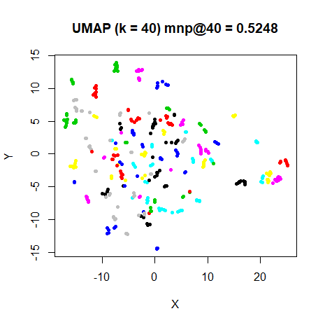

This article retains its original experiments and examples. For current package usage, see the usage guide.
Update March 15 2018: This document has been re-written with new results using settings closer to the defaults of UMAP rather than t-SNE and a smooth k-nearest neighbors distance treatment that more correctly matches the Python implementation.
UMAP (Uniform Manifold Approximation and Projection) is a dimensionality reduction method based on reducing the cross-entropy between two fuzzy sets. The UMAP paper goes into some detail on the theory, but not into algorithmic specifics. From the point of view of the nuts and bolts of the computation, you can work out a fair amount from the source code. To take a broad view, it’s definitely in the t-SNE family of dimensionality reduction, but with a different theoretical underpinning, and the implementation itself is similar to LargeVis in how it scales to large datasets.
More details on the cost function and resulting gradient can be read on the theory page. What makes UMAP (and LargeVis) of specific interest is that, unlike t-SNE, it doesn’t require normalization in the output step to convert affinities to probabilities. This is in fact the key to its superior scaling to very large datasets, compared to Barnes-Hut t-SNE.
The reason that this lack of normalization is important is because normalization has been suggested as being one of the properties that leads to the superior performance of t-SNE over other methods (see, for example, this perspective by Lee and Verleysen). It’s important to note that normalization is still carried out on the input affinity matrix in UMAP, although in a slightly different way to the perplexity-based calibration used in t-SNE. Another difference is that while the input matrix is symmetrized, the final normalization step used in t-SNE (division by the grand total of the matrix so all the “probabilities” sum to 1) is not carried out in UMAP.
Variations on UMAP
t-UMAP
The UMAP gradient contains some extra terms compared to the t-SNE
version that make it more expensive to calculate. But we can simplify
matters considerably by adopting the t-SNE weighting function: the
Cauchy distribution, which arises naturally in UMAP by setting the
a and b parameters of its weighting function
to 1.
The gradient for t-UMAP is therefore:
\frac{\partial C_{\text{t-UMAP}}}{\partial \mathbf{y}_i} = 4\sum_j^N \left( v_{ij} - w_{ij} \right) \frac{1}{d_{ij}^2} \left(\mathbf{y}_i - \mathbf{y}_j\right) which can also be written as:
\frac{\partial C_{\text{t-UMAP}}}{\partial \mathbf{y}_i} = 4\sum_j^N \left( v_{ij} - w_{ij} \right) \frac{w_{ij}}{1 - w_{ij}} \left(\mathbf{y}_i - \mathbf{y}_j\right)
Normalized t-UMAP
A further modification of t-UMAP, that normalizes both the input and output affinities in the style of t-SNE. I have no theoretical justification for doing this, but I was curious to see the effect of normalization on both the results and the ease of optimization was.
The gradient for normalized t-UMAP is:
\frac{\partial C_{\text{nt-UMAP}}}{\partial \mathbf{y}_i} = 4\sum_j^N \left( \frac{p_{ij} - q_{ij}}{1 - q_{ij}} + \sum_{kl} \frac{p_{kl} - q_{kl}}{1 - q_{kl}} q_{ij} \right) w_{ij} \left(\mathbf{y}_i - \mathbf{y}_j\right)
I’m sure there’s a nicer or clearer or more efficient way to express that, but I wasn’t motivated to find it.
Datasets
See the Datasets page.
Settings
The gr_eps parameter was set to 0.1, the
value used in LargeVis, which gives slightly better results than the
Python UMAP reference implementation value of 0.001. In
smallvis, both the LargeVis and UMAP methods use
gr_eps = 0.1 as defaults, but I’m setting it explicitly
below in the example code below to avoid ambiguity.
Smaller values of gr_eps, while preferable for making
the gradient more accurate, cause rather erratic behavior in
optimization, with lots of tight, small clusters forming, which take a
large number of iterations to coalesce, and the results are rarely
different from using gr_eps = 0.1. As a brief test, I took
the iris and s1k datasets and ran with
gr_eps = 0.1 to convergence. Then I starting a second UMAP
run with gr_eps = 0.001, gr_eps = 1e-10 or
gr_eps = .Machine$double.eps, initialized with the final
coordinates of the gr_eps = 0.1 run. In all cases, I saw
barely perceptible changes to the coordinates and only a small change to
the gradient norm and cost. While this is hardly conclusive proof, it’s
reasonable to proceed with gr_eps = 0.1.
Like other non-normalized cost functions I’ve looked at (e.g. elastic
embedding), UMAP is much harder to optimize than t-SNE. The
delta-bar-delta method requires a much smaller learning rate and
consequently much larger number of iterations. For the larger datasets
mnist, and fashion (and remember these are
only 6,000-item subsets), optimization this way is truly painful,
Optimizing mnist with UMAP took several days to get to
50,000 iterations. This is definitely overkill, but still something to
bear in mind, particularly as the default settings for UMAP, use a small
neighborhood size (compared to t-SNE), which (as seen with looking at perplexity in t-SNE) requires larger number
of iterations.
In practice, L-BFGS with step-wise scaled perplexity, which is the
best general purpose approach embedding optimization
method I have come up with, is a more cost-efficient alternative,
and I would suggest using that instead of DBD. However, nt-UMAP
does work with DBD as well as t-SNE, so to try to be as
consistent as possible with the methods here and as a comparison with
t-SNE, all the results show here use DBD, but with different values of
max_iter.
Other settings are adjusted from the usual t-SNE defaults to match
those of UMAP. The initialization method is
Y_init = "normlap", which uses the lowest eigenvectors of
the normalized Laplacian based on the input weights.
When used with UMAP, the perplexity setting is
interpreted as the value of k to use in the smooth
k-nearest-neighbor calibration. The UMAP default is 15,
lower than usual values for t-SNE (where it’s usually between
30 and 50).
Some examples invocations for iris:
iris_umap <- smallvis(
iris,
scale = FALSE,
perplexity = 15,
Y_init = "normlap",
method = list("umap", gr_eps = 0.1),
eta = 0.01,
max_iter = 50000,
epoch = 100
)
iris_tumap <- smallvis(
iris,
scale = FALSE,
perplexity = 15,
Y_init = "normlap",
method = list("umap", gr_eps = 0.1),
eta = 0.01,
max_iter = 50000,
epoch = 100
)
iris_ntumap <- smallvis(
iris,
scale = FALSE,
perplexity = 15,
Y_init = "normlap",
method = "ntumap",
max_iter = 5000,
epoch = 100
)
iris_tsne <- smallvis(
iris,
scale = FALSE,
perplexity = 15,
Y_init = "normlap",
method = "tsne",
max_iter = 5000,
epoch = 100
)Evaluation
For each initialization, the mean neighbor preservation of the 15
nearest neighbors, calculated using the quadra package: for each
point the 15 nearest neighbors are calculated in the input and output
space, and the fraction of neighbors in common is recorded (0 means no
neighbors are in common, 1 means all the neighbors were preserved). The
number reported is the mean average over all results and is labelled as
mnp@15 in the plots. 15 was chosen for these results to
match the perplexity, which is treated as the value of
k in the smoothed k-nearest neighbors calculation in
UMAP.
Results
For each dataset, four results are shown. The first row shows UMAP and t-UMAP on the left and right, repectively. On the second row is normalized t-UMAP and t-SNE results.
Conclusions
The UMAP results are remarkable in that they thoroughly resemble the
t-SNE results in their broad shapes. This, despite the fact that no
normalization of the output similarities are carried out (which in turn
makes it amenable to scaling up to much larger dataset sizes via
stochastic gradient descent). The default output similarity kernel tends
to produce smaller, more well separated clusters, but the t-UMAP results
are closer to the t-SNE results. It also has the advantage (in the
context of smallvis) of being faster to optimize because
the gradient is simpler. The UMAP and t-UMAP results for
mnist and fashion might even be said to be
superior to that of t-SNE, although some of that effect is due to the
sparser nature of the input weights – see the conclusions in the follow-up document.
For coil20, the UMAP curve settings might be said to
produce too separated clusters. However, the choice of
k = 15 seems like a better choice for preserving the loop
topology for that dataset (and confirmed with the
perplexity = 15 results for t-SNE). The only UMAP embedding
I don’t like much is for oli, and that can be fixed by
using a larger value of k (a t-SNE-like perplexity = 40,
for example):
 |
The normalized version, nt-UMAP, is even closer to the t-SNE results
and can be optimized easily via the DBD method. DBD optimization of the
UMAP and t-UMAP cost functions were certainly a lot slower than
the equivalent t-SNE result, but this is an observation of limited
practical significance. In real-world use of UMAP (i.e. using the real
Python UMAP, not its implementation in smallvis),
stochastic gradient descent is used, seems very fast and scales much
better than t-SNE.
However, in a more general sense, it may be that there is something about the normalization that causes DBD to start working well. Or there may be a scheme to balance the positive and negative parts of the gradient that makes DBD start working with un-normalized (and hence separable) cost functions. This might be worth looking into.
February 17, 2018: some more UMAP-related work, looking at importing some of UMAP’s ideas into t-SNE.